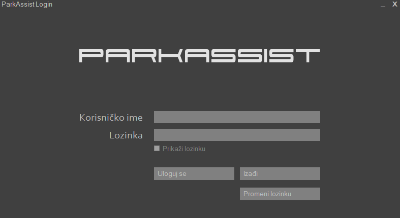
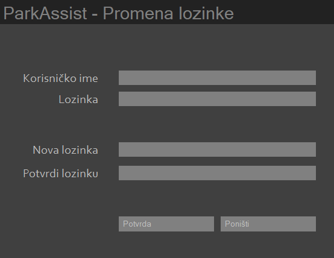
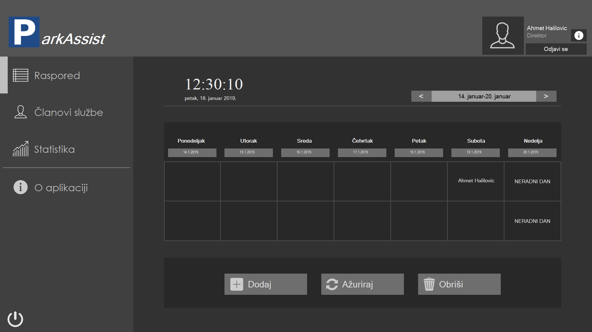
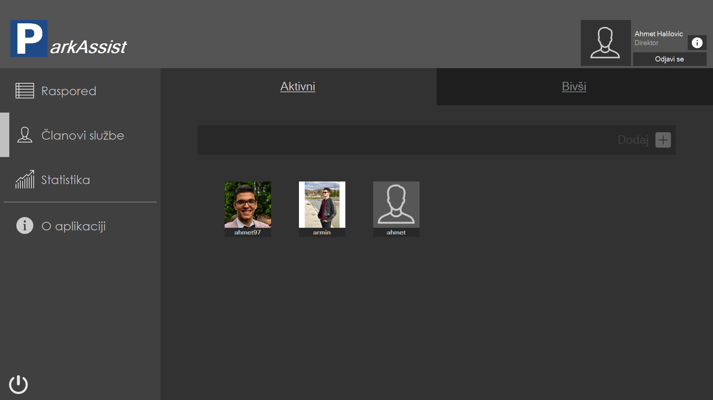
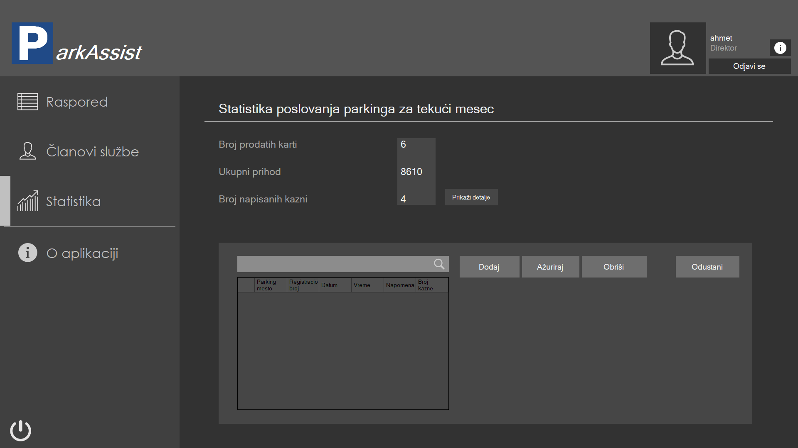
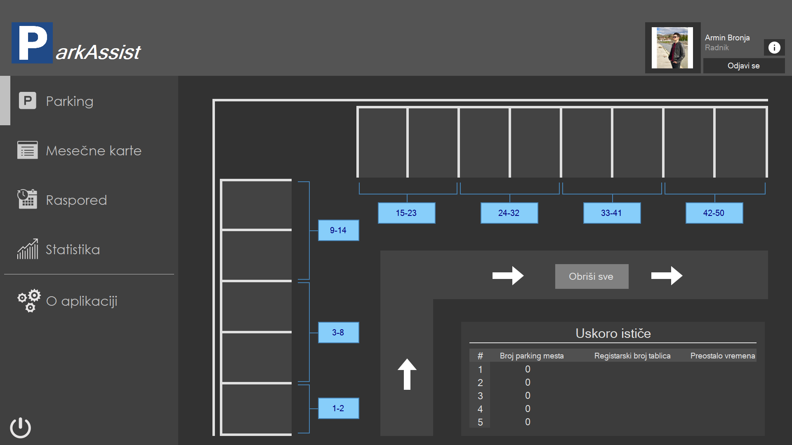
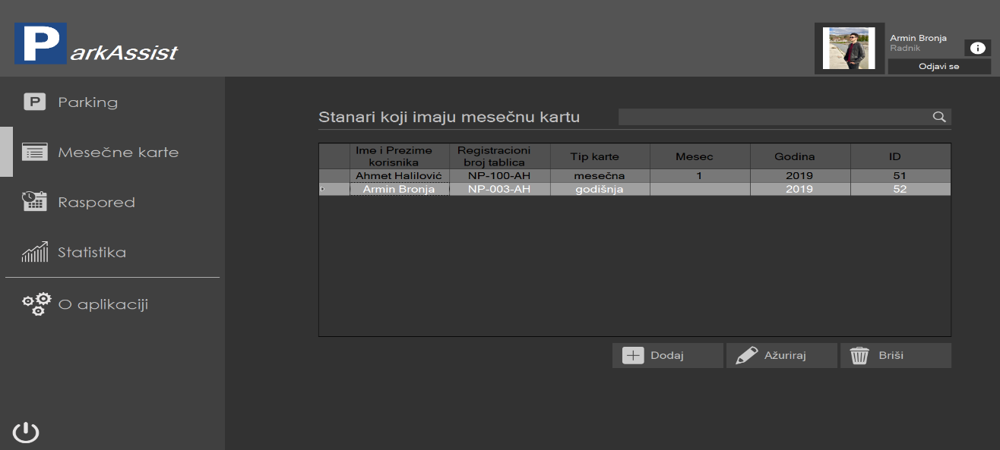

ParkAssist je aplikacija koja je predviđena da olakša posao radnicima parking službe.
Korisnik unosi korisničko ime i lozinku i klikom na dugme Uloguj se prijavljuje se na sistem.

U slučaju da korisnik želi da promeni lozinku, to će uraditi klikom na dugme Promeni lozinku u formi za prijavu. Tada mu se otvara nova forma, u kojoj unosi svoje korisničko ime, trenutnu lozinku i novu lozinku, kao i potvrdu nove lozinke.
Ukoliko je ulogovani korisnik direktor otvara se sledeća forma:

Raspored
U rasporedu se prikazuju smene radnika cele službe. U tabeli je prikazana tekuća nedelja, a preko selektora u gornjem desnom uglu može da se bira željena nedelja za prikaz. U donjem delu forme korisnik ima opciju da doda, ažurira ili briše smenu.
Dodavanje vrši tako što unosi bira radnika, odgovarajuću i datum.
Ažuriranje se vrši tako što se bira željena smena, a menja se radnik te smene.
Brisanje se vrši tako što se odabere član službe i dan u kojem njegove smene treba da se brišu.
Članovi službe
Klikom na članove službe se otvori stranica svih članova službe

Klikom na dugme Dodaj otvara se forma za dodavanje člana. Korisnik unosi podatke i kreira člana službe.
Klikom na korisnika u listi članova službe otvaraju se podaci tog člana. U toj formi korisnik može da arhivira člana i uredi njegove podatke.
Klikom na dugme Bivši korisnik dobija listu bivših članova službe.
3.3 Statistika i kazne
Klikom na dugme Statistika otvara se forma u kojoj je prikazana statistika poslovanja parkinga za tekući mesec i detaljan prikaz kazni, gde je moguće upravljati kaznama.

3.4 O aplikaciji
Klikom na dugme O aplikaciji moguće je doći do ovog dokumenta.
Ukoliko je ulogovani korisnik radnik otvara se sledeća forma.

Klikom na dugme Parking korisniku se prikazuje grafička šema parkinga. Tu može da izabere određeno parking mesto gde mogu da se unesu, ažuriraju ili obrišu podaci o vozilu. Korisnik takođe dobija notifikacije o isteklom vremenu vozila, I u tom slučaju im može pisati kaznu.
Mesečne karte
Klikom na dugme Mesečne karte dobija se uvid u korisnike tih karti.

Tu je moguće upravljati podacima korisnika mesečne karte.
Raspored
KLikom na dugme Raspored radnik dobija uvid u svoje smene.
Statistika i kazne
Klikom na dugme Statistika otvara se forma u kojoj je prikazana statistika poslovanja parkinga za tekući mesec i detaljan prikaz kazni, gde je moguće upravljati kaznama.
Klikom na dugme O aplikaciji moguće je doći do ovog dokumenta.